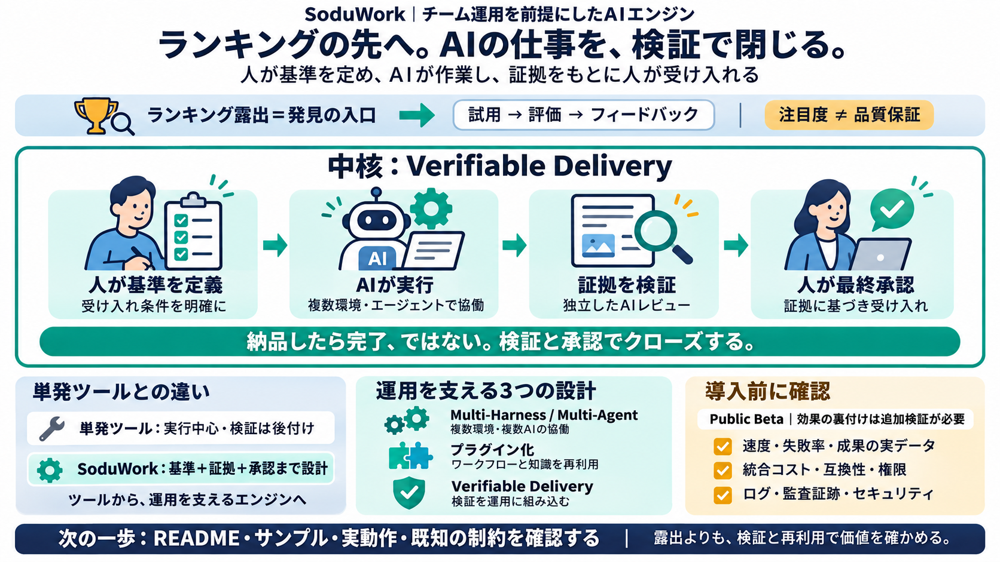

连续霸榜两天！SoduWork 登顶 Trendshift 周增速榜，并两度跻身其 JavaScript 榜单前列|插件|源代码|网络环境|agent_网易订阅
在 SoduWork 的设计中，任务完成并不等于交付结束。项目将验收标准纳入工作流程，通过独立 AI 审查与人工最终确认，对执行结果进行检查。任务执行、结果审查和交付验收由此形成衔接，相关过程也能够留下记录，便于追踪和复核。 从多种 Ag…

Trendshiftの露出で注目を集めつつ、SoduWorkは「人が基準を定め、AIが作業し、証拠で受け入れる」運用志向の設計を打ち出します。 （人間中心の検証＝Verifiable Delivery）
オープンソースではランキングやトレンド露出は入口にすぎず、開発者が課題解決・試しやすさ・貢献導線を理解できて初めて前に進みます。 重要なのは「見つけてもらう」次の段階です。
SoduWorkの主張は「単発のエージェント」ではなく、チームのワークフローにAIを組み込む“エンジン”です。 （単機能より運用設計＝workflow integration）
基本は「人が受け入れ基準を定義し、AIが作業を実行し、証拠（evidence）に基づいて人が受け入れる」流れです。 納品＝完了ではなく“検証でクローズ”します。
Trendshiftでは、SoduWorkがJavaScriptランキング上で複数回トップ15入りし、Weekly Growthで2日連続1位になったとされています。 これは“発見の入口”の強さを示す材料です。
SoduWorkは「Multi-Harness / Multi-Agent」「プラグイン化による再利用」「Verifiable Delivery」の3点で、チーム運用の前提を作ります。 （実行だけでなく“閉じ方”が焦点）
Verifiable Deliveryでは、受け入れ基準→独立AIレビュー→人の最終確認で結果をクローズします。 （説明可能性・信頼性を運用に埋め込む考え方）
単発ツールは出力の良し悪しが利用者側に寄りがちですが、SoduWorkは基準・証拠・承認までを設計対象にします。 その結果、チーム導入の再現性が上がりやすい方向です。
MITライセンスで公開され、Public Beta段階で、READMEやデプロイ文書、プラグイン開発ガイドなどの導線が整っているとされています。 さらにIssue/PRで貢献できます。
文章は方向性を示す一方、速度・失敗率・検証の厳格さ・ユーザー成果・再現性などの具体データは提示されていません。 Public Betaゆえ、運用リスク（統合コスト、互換性、セキュリティ）も確認が必要です。
SoduWorkは、ランキング露出（発見）を足がかりにしつつ、チーム運用の“検証と再利用”を差別化要素としている点が本質です。 投資・導入判断には、実データと運用上の前提確認が次のステップになります。
入力文の記述に基づく要約です。実リンク確認が必要なため、以下は「参照カテゴリ」を提示します。 （該当URLはあなたの環境の提示情報に合わせて補完してください）
在 SoduWork 的设计中，任务完成并不等于交付结束。项目将验收标准纳入工作流程，通过独立 AI 审查与人工最终确认，对执行结果进行检查。任务执行、结果审查和交付验收由此形成衔接，相关过程也能够留下记录，便于追踪和复核。 从多种 Ag…
Recently, SoduWork — an enterprise-grade AI-native engine — made a strong showing on Trendshift, a platform that tracks …
SoduWork's own code is copyright MDiRi and released under the MIT License. Third-party code, fonts, graphics and bundled…
## What is SoduWork? SoduWork is an MIT-licensed, self-hosted workspace from MDiRi for teams that hand work to AI agent…
SoduWork is a self-hosted hub where coding agents finish work only after someone signs off on evidence, not when the mod…